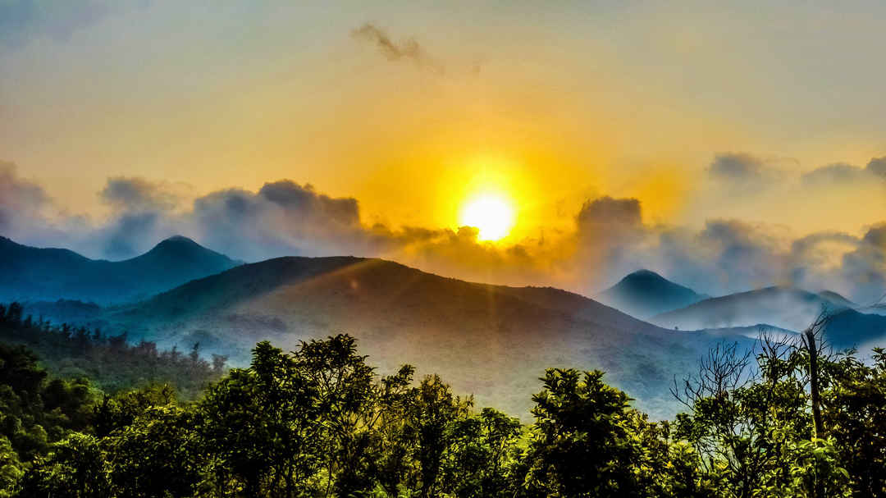
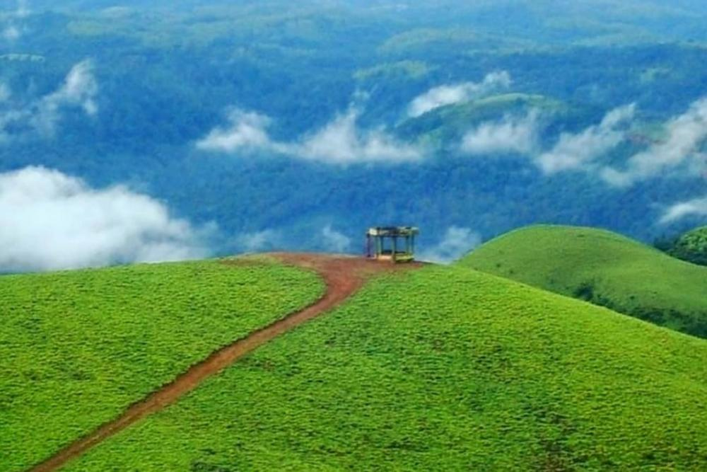
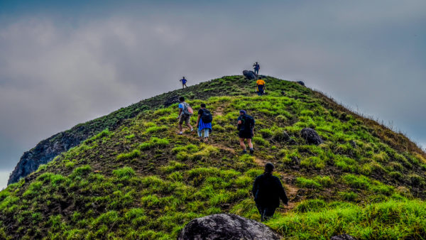
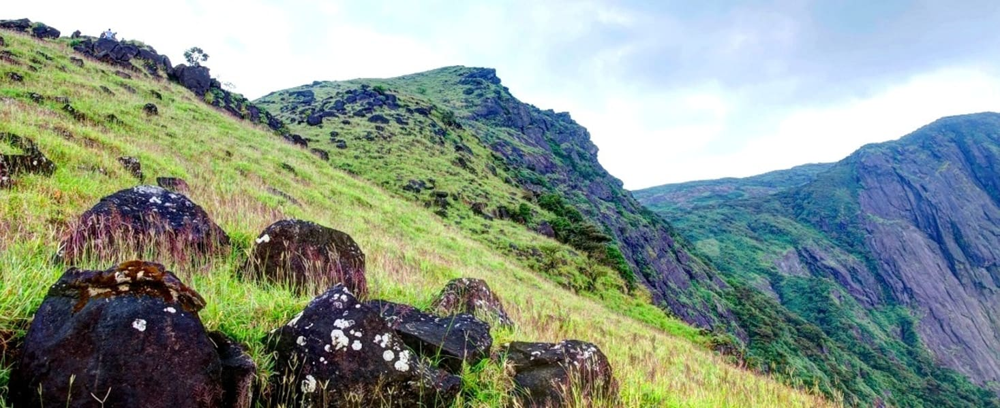
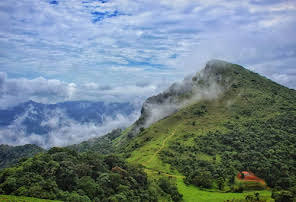
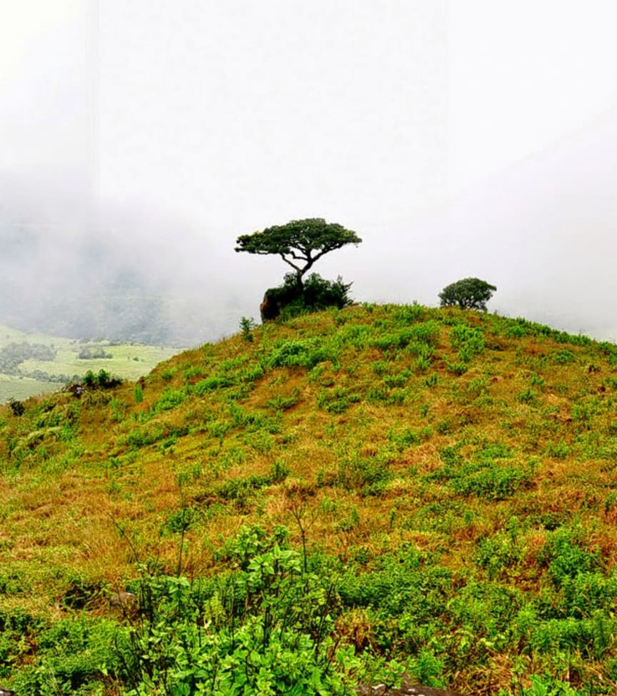
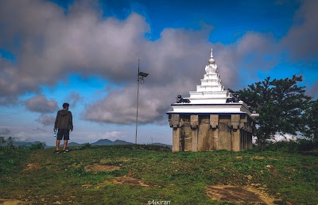

Brahmagiri Hills

Brahmagiri is a mountain range and a popular trekking destination located in the district of Coorg
(Kodagu) in Karnataka, India. It is situated near the town of Bhagamandala, which is about 36 kilometers from Madikeri, the main town in Coorg.
Brahmagiri offers beautiful natural landscapes, dense forests, and breathtaking views of the surrounding
hills and valleys. The trek to Brahmagiri Peak is a well-known activity among adventure enthusiasts and nature lovers. The peak is located at an altitude of around 5,276 feet (1,608 meters) above sea level.
To reach Brahmagiri, you can travel to Bhagamandala by road from Madikeri or other nearby towns. From Bhagamandala,
you can start the trek to the peak. The trek route passes through forests, streams, and grasslands, providing a picturesque experience.
Tadiandamol

Tadiandamol is the highest peak in the district of Coorg (Kodagu) in Karnataka, India. It is a popular trekking destination and is known for its scenic beauty and panoramic views.
Tadiandamol is located in the Western Ghats range and stands at an elevation of approximately 5,735 feet (1,746 meters) above sea level.
The trek to Tadiandamol offers a thrilling experience for adventure enthusiasts and nature lovers. The trail takes you through lush forests,
rolling meadows, and rocky terrains. Along the way, you can encounter a variety of flora and fauna, including diverse species of birds and butterflies.
Mandalpatti Hills

Mandalpatti Hills, also known as Mandalpatti Peak or Mandalpatti Viewpoint, is a popular tourist destination located in the district of Coorg (Kodagu) in Karnataka,
India. It is situated near the town of Madikeri and offers breathtaking panoramic views of the surrounding valleys and hills.
Mandalpatti is known for its scenic beauty, lush greenery, and serene atmosphere. The hill is part of the Pushpagiri Wildlife Sanctuary,
and the area is rich in flora and fauna. It is a great spot for nature lovers, photographers, and adventure seekers.
Nishani Motte

Nishani Motte, also known as Nishani Betta, is a popular trekking destination located in the district of Coorg (Kodagu) in Karnataka, India. It is known
for its scenic beauty, dense forests, and panoramic views of the surrounding hills and valleys.
Nishani Motte is part of the Brahmagiri mountain range in the Western Ghats. It stands at an elevation of approximately 4,730 feet (1,440 meters)
above sea level. The trek to Nishani Motte is relatively moderate in difficulty and offers a great adventure for trekking enthusiasts.
The trek usually starts from the village of Bhagamandala, which is about 40 kilometers from Madikeri, the main town in Coorg.
The trail takes you through coffee plantations, dense forests, and steep ascents. Along the way, you can spot various species of flora and fauna, including different types of birds and wildlife.
Pushpagiri Hills

Pushpagiri Hills, also known as Pushpagiri Peak, is a prominent mountain peak located in the district of Coorg (Kodagu) in Karnataka, India. It is part of the Pushpagiri Wildlife Sanctuary, which is a protected area known for its rich biodiversity and natural beauty.
Pushpagiri is the second highest peak in Coorg, standing at an elevation of approximately 5,617 feet (1,712 meters) above sea level. The region is covered with dense forests, lush greenery, and scenic landscapes, making it a popular destination for nature lovers and trekkers.
Trekking to Pushpagiri Peak offers an adventurous experience, taking you through thick forests, streams, and grasslands. The trek is considered moderately challenging and requires good physical fitness. It usually takes around 6-7 hours to complete the trek to the summit and back,
depending on the pace and weather conditions.
Chomakund Hills

Discover this 9.7-km out-and-back trail near Virajpet, Karnataka. Generally considered a moderately challenging route, it takes an average of 3 h 52 min to complete. This is a very popular area for birding, hiking, and walking, so you'll likely encounter other people while exploring.
The trail is open year-round and is beautiful to visit anytime.
Kabbe Hills

The Kabbe Hills, also known as Kabbe Pass or Kabbe Trek, are a scenic mountain range located in the district of Coorg (Kodagu) in Karnataka, India. The hills are situated near the town of Virajpet and offer breathtaking views of the surrounding landscapes.
The trek to Kabbe Hills is a popular activity for adventure enthusiasts and nature lovers visiting Coorg. The trail takes you through lush green forests, coffee plantations, and picturesque valleys. As you ascend, you'll be rewarded with panoramic views of the rolling
hills and the Western Ghats.
Kunda Betta

Kunda Betta is located near from Ponnampet South Coorg. Shiva Temple on top of Kunda Betta. Watching paddy fields, village and the nature gives the utmost
pleasure to your mind and can receive the cool breeze to your body